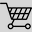

Barra Funda
Perdizes
Augusta
Legenda:
| hospital, pronto socorro
| banco

| supermercado, mercado, sacolão
| padaria, bar, restaurante
| escola, faculdade
| cafeteria
| cacau show
| chocolates brasil cacau